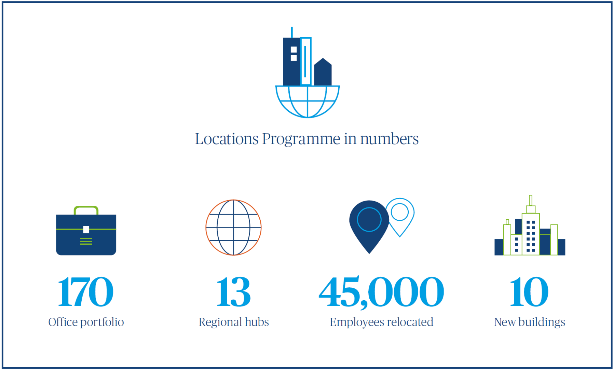

Client Interview: HM Revenue & Customs embraces its digital future
Tax experts must be good at solving mathematical problems. Even so, HM Revenue & Customs (HMRC) has embarked on a fiendish brain teaser with its Locations Programme.
Tax experts must be good at solving mathematical problems. Even so, HM Revenue & Customs (HMRC) has embarked on a fiendish brain teaser with its Locations Programme.
HMRC is taking a scattered 170-office portfolio, converting it into 13 regional hubs, five specialist sites and relocating nearly 45,000 employees in the process. At least ten new buildings are being constructed and fitted out, each the equivalent size of a corporate headquarters. To make the task even harder, the programme must be largely completed by April 2021.
Steven Boyd, HMRC’s Head of Estates, is leading the £500m endeavour. “It’s the biggest property programme in the UK by some distance,” he comments without any sense of drama.
A chartered engineer who served with the British Army for 30 years (latterly as Head of the Army Estate), Boyd is used to working quickly. Two years into the programme, his goal is not merely to deliver, but to improve the end-to-end construction process. The effects are being felt everywhere from furniture design to facilities management (FM).
Harmonising building information modelling (BIM)
The termination of a major private finance initiative (PFI) contract in 2021 partly explains HMRC’s pace. By moving to large leased regional centres, HMRC calculates that it will save £90m annually from 2028. HMRC is also taking the opportunity to become “one of the most digitally advanced tax authorities in the world,” moving its people into buildings with highspeed digital infrastructure, facilitating collaboration and smarter working.
It’s a once in a generation opportunity.
It’s an opportunity that extends to the construction community: with buildings at Croydon and Canary Wharf completed, seven projects out the ground and others still in design or pre-design phase, the overlapping schedules present the client with a unique overview of how the construction process can be improved.
Strategic use of BIM is at the heart of the programme. It is the first government property programme to adopt level 2 BIM on such a scale. Every project has a 3D digital “twin” model, rich with data that is built and shared by all parties in the construction process. Once the programme is completed, HMRC will use the BIM models for facilities maintenance and to compare the performance of buildings across its portfolio.
It’s really exciting, an opportunity to really make a difference to our people. To make a really big and lasting change.
Such vast resources of data are worthy of academic study, Boyd suggests. But he admits that challenges still remain, adding that the BIM dimension is “proving more difficult than we thought”. This is because each part of the industry has adopted slightly different naming conventions for objects. As a result, one item could change names a couple of times as it passes from design to construction and then maintenance, affecting the quality of the data.
HMRC has brought together contractor and supplier forums to tackle this problem. One of its goals is to agree a commonality of terms and to encourage information to be properly passed from team to team as the project progresses.
“The commercial property industry has a whole series of discontinuities. We want to minimise them. Getting people to work across boundaries is a way of doing that,” he adds.
One strategy is to bring FM companies to the table as early as possible. Boyd wants them to attend contractor forums long before they are usually engaged on a project.
“We want our FM suppliers to be witnessing things such as the commissioning of air conditioning systems. Hopefully, that will help us land the service in a smooth way,” he says, adding that he is especially pleased by the way contractors are working together in the forums to identify and solve problems.

Early involvement
Now, he has the tricky task of keeping up the pace of delivery, while navigating multiple public sector approval processes.
Getting departmental approval is one thing, but you’ve also got to get it past the Cabinet Office, the Treasury, and a huge amount of external engagement, including local authorities and MPs,
Boyd says. In the past two years, he has learnt a lot about communication and forward planning, and in particular how to minimise any surprises for decision makers.
Given the approval regime, how does he ensure that such a complex programme remains on track and not mired in bureaucracy?
“We’ve spent a lot of time getting the governance right and ensuring that it’s streamlined. And to make sure that decisions are pushed down to project level as far as possible,” he says. “We’re also working really hard with the Cabinet Office, Treasury and HMRC’s investment committee. To give them the confidence that they don’t need to review everything in triplicate.”
But he adds a note of caution. “That confidence is, of course, really hard won and easily lost.”
A people-driven programme
Boyd is always mindful that the biggest stakeholder group is HMRC’s 60,000 employees who will all be undergoing a seismic culture shift in the new smart working environment. An estimated 45,000 workers will also be moving to new locations. But he says that the endeavour has been very much “people driven” and staff consultations have formed a large part of HMRC’s strategy.
The old estate was highly fragmented and becoming increasingly expensive to run. Staff in regional outposts complained of feeling isolated and struggling to progress their careers. The smallest offices held as few as ten people.
HMRC’s transformation programme, by contrast, is ushering in flexible and collaborative working. Fixed desk seating arrangements are out. Instead, staff will be assigned state-of-the-art laptops and will store their belongings in lockers. They can then choose from a variety of seating options from traditional workspaces to sofas, kitchen tables and breakout spaces.
Boyd says that the new hubs have been strategically located. All are no more than 15 minutes’ walk from a mainline rail station. Of the 45,000 employees affected, the vast majority are expected to move to the new locations. For those that cannot, HMRC will help find them jobs in other government departments, or if this is not possible they will receive redundancy packages. It is also offering career transition support and training.
“I have a team specifically working on the people piece all the time. It’s both worrying and exciting for employees, and managing that is a challenge,” Boyd says.
But despite the complexity, he admits that he is enjoying this multi-faceted programme.
It’s really exciting, an opportunity to really make a difference to our people. To make a really big and lasting change. Our staff who have moved into the new locations are really enjoying the great workspaces

In a nutshell: The Locations Programme
HMRC’s Locations Programme is phase one of the government’s hubs programme that will ultimately see civil service departments clustered together in different regions of the UK.
The transformation of the government department involves the fit-out and furnishing of an estimated 730,000 sqm of strategic hub space, including the delivery of 13 regional centres and a temporary transitional office in Canary Wharf. At least ten centres will be newly constructed, other projects involve refurbishments or fit-outs of existing buildings.
HMRC calculates that the programme will help it avoid additional PFI costs of around £75m a year. Moving to regional centres will save a further £90m in efficiency savings achieved annually from 2028.
The new offices will also help HMRC achieve its goals of improving customer service and delivering an extra £1bn in revenue by 2019–20.
The first new regional centre opened in Croydon in summer 2017 and the transitional office in Canary Wharf is operational. The busiest time for staff mobilisation is expected to be 2020, when up to seven buildings are scheduled for completion.
HMRC calculates that the programme will help it avoid additional PFI costs of around £75m a year. Moving to regional centres will save a further £90m in efficiency savings achieved annually from 2028.
The new offices will also help HMRC achieve its goals of improving customer service and delivering an extra £1bn in revenue by 2019–20.
The first new regional centre opened in Croydon in summer 2017 and the transitional office in Canary Wharf is operational. The busiest time for staff mobilisation is expected to be 2020, when up to seven buildings are scheduled for completion.
Flexible, sustainable and future-proofed
HMRC’s Locations Programme is taking advantage of the repeatable work and economies of scale opportunities. This is affecting everything from carpet tile procurement to design and every new location will have a similar feel.
“We’ve adopted a standard approach. This avoids costly bespoke design solutions that could become quickly outdated,”
Boyd says. He adds that each floorplate of an HMRC building will be modular, so that layout can be quickly reconfigured, should the need arise.
Electronic entry systems are also being installed at each floor level. This will make it easier to let parts of the building out to other organisations in the future. And, with digital security a priority, HMRC’s building data, such as the CCTV or building management systems, will be stored on a local access network (LAN) in each location, which will be entirely separate from other digital infrastructure.
“Regarding IT, we’ve gone massively over the top in terms of bandwidth into the buildings. We’re assuming that there will be huge amounts of video conferencing and videobased training,” Boyd says.
Mass procurement is also enabling HMRC to flex its muscles with suppliers. It is working with five furniture manufacturers to ensure that all the furniture in its new locations meets disability standards. Many items will also include USB and power sockets. In addition, HMRC’s strong demand for carpet tiles has helped it persuade manufacturers to reduce the amount of plastic in the final product.
"Suppliers are telling us that no one has asked for these things before,” Boyd says,
We’re pushing the envelope on what’s doable.